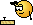
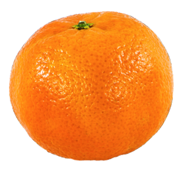

Note à l'attention des nouvelles et nouveaux visiteur-euses :
Bienvenue sur Satureja path, le chemin de la sarriette. Ce site est en construction ! 
Il y a donc certaines choses qui ne sont pas encore renseignées, comme toute la section portraits, et c'est normal, j'y travaille ! Cependant, n'hésitez pas à me contacter si vous remarquez des choses bizarres (:
A paraitre prochainement sur Satureja path :
- des mises en page de vieux trucs que j'aimerais archiver
Last update 18/05/25 :
- réorganisé le menu et ajouté une mindmap de toutes les pages du site ! -> mindmap
Bienvenue sur Satureja path, le chemin de la sarriette.
En parcourant ce chemin, vous allez pouvoir vous égarer dans mes expérimentations artistiques, principalement autour de la photographie. Ces expérimentations sont réparties en projets et portraits.
Satureja est le nom latin de la sarriette, une plante méditerranéenne qui entre dans la composition des herbes de Provence.
Latest projects
Les projets sont constitués d'une série de photographies sur un même thème. Une grande liberté est prise concernant la mise en page et mise en valeur des photographies. Selon le projet, la photographie n'est pas forcément le plus important.

.jpg)
Portraits
[En construction ] Les portraits sont des photographies d'une même personne qui peuvent avoir été prises à différents endroits et/ou différents moments. L'idée des portraits est de regrouper en un seul endroit des photographies mettant en valeur une personne qui m'est chère. Des libertés peuvent être prises quant à la mise en page et valorisation des photographies afin de refléter au mieu l'image que j'ai d'une personne.
la chatbox des bgs et des bgettes
Ne t'approche pas de cette clémentine!!
